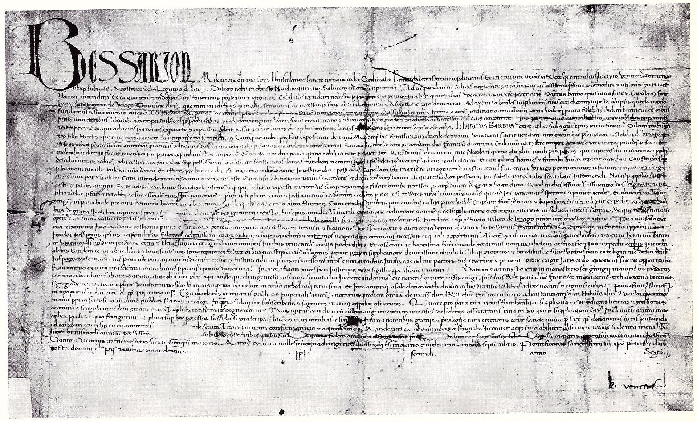

第 18 章
修复的伦理转向
“一切历史痕迹都应当受到尊重。”
这句话出现在1964年《威尼斯宪章》的第十一条，原文谈论的是建筑遗产——那些不同时代留在古迹上的叠加物，无论风格是否协调，都不应轻易抹去。宪章起草者或许并未预见到，这条原则将在三十年后，被用来重新审视一批远在万里之外的中国佛教壁画残片上的切割痕迹。那些痕迹的边缘整齐得近乎残忍。
狐尾锯的锯齿在干涸的泥皮上留下的路径，至今仍清晰可辨。它们分布在柏林、伦敦、巴黎、东京和纽约的库房里，沉默地标记着二十世纪初那场大规模文物迁移的暴力。
但在宪章通过后的很长一段时间里，这些痕迹并不被视为需要尊重的“历史痕迹”。它们被看作瑕疵，是需要用石膏和颜料覆盖的技术问题。
修复伦理的转向，正是从重新定义“什么是值得保留的历史痕迹”开始的。要理解这一转向的艰难，必须先回到早期修复实践的现场。二十世纪初，当德国探险队将柏孜克里克千佛洞的壁画成片锯下、装箱运回柏林时，这些壁画残片面临的第一道工序不是学术研究，而是修复。修复的逻辑很直接：它们必须适合展出。
民族学博物馆的修复人员面对的，是一块块边缘整齐但画面断裂的泥质残片。他们的处理方式在当时被视为标准操作——用水泥和石膏加固背面，填补画面缺失的部分。在某些情况下，修复师甚至根据同时期壁画的样式，重绘了已经模糊的佛像面容和衣纹。这种修复哲学根植于十九世纪欧洲的建筑修复传统。
法国建筑师维奥莱-勒-杜克曾主张，修复一座建筑意味着将其恢复到一种“可能从未存在过的完整状态”。这一理念移植到文物修复领域后，体现为一种强烈的干预冲动：修复师的职责是让文物看上去完整，以便它在博物馆展线上，能够顺畅地承担起艺术史叙事的视觉证据功能。
但“完整”这个词本身就是一个价值判断。它假设一件佛教造像或壁画的价值主要在于视觉形式的完整呈现，假设缺失的部分只是需要填补的空白，而非文物生命史中承载着特定历史信息的痕迹。
在这种假设下，修复师手中的画笔和石膏，实际上成为一种解释权的工具——它在抹平残缺的同时，也抹去了文物从洞窟到博物馆之间那段被切割、运输、转卖的流散史的物质证据。这种早期修复实践造成的后果，在二十世纪后半叶开始被系统性地重新评估。评估的契机往往来自对同一批文物在不同时期修复状态的比对。
柏林收藏的一幅柏孜克里克壁画残片，曾在二十世纪三十年代被修复师用油彩在画面空白处补绘了云纹和背光。到了八十年代，文物保护科学家用X荧光光谱分析了这块残片，发现补绘所用的颜料与原始矿物颜料在化学成分上完全不同。更关键的是，补绘的部分覆盖了壁画边缘那些细小的切割痕迹——正是当年探险队使用狐尾锯的证据。
这类发现并非孤例。在多家博物馆的库房里，早期修复的覆盖层之下，都埋藏着类似的信息。那些被石膏填平的锯痕、被颜料遮盖的断裂面、被新材料替换的残缺部分——它们记录的不是文物的原初状态，而是文物离开原境的过程。
当修复师用自己时代的审美和技术覆盖这些痕迹时，他们无意中完成了一次二次抹除：第一次抹除发生在探险队切割洞窟墙壁的那一刻，第二次则发生在修复室的工作台上。
重新评估的压力也来自更广泛的国际遗产保护运动。1964年的《威尼斯宪章》虽然主要针对建筑遗产，但其核心原则——保存各个历史时期的痕迹——开始向博物馆修复领域渗透。宪章第十一条的表述在当时是具有颠覆性的：它拒绝将古迹的历史简化为某一个“黄金时代”，拒绝为了追求风格统一而牺牲历史的层次感。这一原则如果被严格应用于流散文物，便意味着：一尊佛像在流失过程中手臂被凿断的痕迹，与它在唐代被雕凿时的刀痕，在历史价值上是平等的。
但理念的渗透远比条文的通过缓慢。在整个七十年代和八十年代，博物馆修复室里的实际操作，仍然在很大程度上延续着“展览美学至上”的传统。修复师在补全一尊佛像的缺失手臂时，参照的是同时期完整造像的样式，而不是这尊佛像自身经历过的历史。
他们追求的是视觉上的连贯性，而非历史信息的完整性。真正的转折点出现在1994年。那年十一月，联合国教科文组织、国际古迹遗址理事会和日本文化事务厅在奈良联合召开了一次国际会议。会议的主题是讨论“原真性”这一概念在不同文化语境中的含义。会议的背景很明确：长期以来，世界遗产委员会在评定世界遗产时所依据的“原真性”标准，主要基于欧洲的经验——强调物质材料的原始性与不可替代性。
但这一标准在应用于亚洲的木构建筑、土遗址和宗教造像时，便显露出其文化局限性。奈良会议最终形成的《奈良真实性文件》，提出了一项关键主张：对“原真性”的判断，不能脱离特定的文化语境。文件指出，“文化遗产的多样性存在于时间与空间之中，要求尊重其他文化及其信仰体系的所有方面。”
这一表述，为亚洲国家在修复伦理问题上发声，提供了国际法层面的理论支撑。在奈良会议的讨论中，关于亚洲佛教造像“完整性”的理解成为一个焦点。
一位日本专家指出，日本传统中木构建筑的“式年造替”——每隔数十年按照原样重建——被认为是一种保持建筑“完整性”的方式。建筑的精神与文化功能得以延续，尽管物质材料已经更新。这种理解与欧洲强调物质原真性的传统形成了鲜明对比。伊势神宫每隔二十年重建一次，但在日本人看来，它始终是同一座神社。
对于来自中国的学者而言，奈良会议提供了一个阐述另一种“完整性”概念的场合。在中国传统中，信众捐资重塑佛像金身，被视为积累功德的宗教行为。这种行为背后的逻辑，不是追求视觉形式的完整，而是延续佛像作为崇拜对象的功能。一尊被重新贴金的唐代造像，在信众眼中并不因为金箔是新的就失去了原真性——它的原真性在于其宗教功能的延续，而非物质材料的历史层次。
但当佛像脱离其宗教原境、进入博物馆后，这种基于信仰的修复传统便与博物馆的修复伦理产生了冲突。博物馆的职责是保存物质证据，而非延续宗教功能。
一尊被信众重新贴金的佛像，在博物馆看来可能已经丧失了作为历史文物的原真性——那层新金箔覆盖了唐代的凿痕、历代香火的熏痕、以及岁月留下的包浆。
这两种“完整性”概念之间的张力，正是奈良会议试图调和的。会议没有给出一个标准答案，但它确立了一个原则：不同文化传统对“完整性”和“原真性”的理解，应当在修复决策中得到平等考虑。这意味着，欧洲的修复伦理不再是唯一的判断标准。正是在这种跨文化对话的压力下，国际博物馆界的修复理念从二十世纪九十年代末开始发生实质性转变。
“最小干预”和“可识别性”逐渐成为主流修复准则。“最小干预”意味着修复师应尽可能少地对文物进行物质干预，只在文物面临继续损毁的风险时才采取保护性措施。
“可识别性”则要求任何修复添加的部分，都应在近距离观察时能够被辨认出来，以区别于原始材料。这一转向在具体实践中如何体现，可以从一尊流散海外的中国佛教造像的修复方案辩论中窥见一斑。
这尊造像是二十世纪初从河北响堂山石窟流失出去的北齐时期菩萨立像，现藏于美国一家重要博物馆。菩萨的双臂从肘部以下缺失，左足前部残损，背光也有部分残缺。
在二十世纪七十年代，这家博物馆曾对这尊造像进行过一次修复。当时的修复师根据同时期造像的样式，用合成材料补全了缺失的手臂和左足。修复后的造像呈现出一种视觉上的完整性，在展厅中吸引了大量观众。到了2005年，这家博物馆的修复部门决定重新处理这尊造像。引发这一决定的原因是多重的。科学检测发现，七十年代补全所用的合成材料已经开始老化，与原始石质材料之间出现了细微的裂隙。
更重要的原因是，博物馆的策展团队开始意识到，当年的修复补全实际上掩盖了造像流失过程中的一些关键信息——手臂的缺失，很可能是在盗凿和运输过程中造成的。那些断裂面的形态本身就是历史证据。一场修复方案的内部辩论随之展开。
主张完全去除早期修复添加物、保留造像当前残缺状态的修复师提出了明确的理由：博物馆的职责不是“完善”文物，而是保存其全部历史信息——包括流失造成的伤痕。他们引用了《威尼斯宪章》和《奈良文件》的原则，认为七十年代的补全虽然工艺精良，却在客观上抹去了文物生命史的一个关键阶段。
但来自展陈部门的策展人表达了同样合理的担忧。一尊双臂缺失、足部残损的菩萨像，对于大多数观众而言可能造成审美上的障碍，甚至可能被误解为博物馆疏于保护。他们并非反对最小干预原则，而是担心极端的不干预会让文物在视觉上失去与观众沟通的能力。就在这场内部辩论陷入僵局时，来自中国文物部门的一次非正式交流为讨论增添了新的维度。在一次国际学术会议上，一位中国文物专家看到这尊造像的照片后，提出了一个令美方修复师意想不到的观点。

他说，如果这尊造像仍在中国、仍在某种形式的宗教环境中，信众可能会希望修复能“部分暗示其原境”——通过某种方式标示出手臂原本的姿态，以便人们能够想象造像完整时的庄严法相。
但这并不意味着要完全补全手臂，而是在残缺与完整之间，找到一种能够同时尊重历史痕迹与宗教记忆的处理方式。这个建议触及了修复伦理的一个核心难题。当“最小干预”原则尊重了流失造成的切痕时，它是否也在无意中凝固了这段掠夺史？一尊因为盗凿而失去手臂的佛像，如果永远以残缺的状态展出，那么它的残缺本身是否就成为了对掠夺行为的一种沉默的展示？而这种展示，又是否符合来源国的意愿？
辩论最终达成的方案体现了一种微妙的平衡。修复师小心翼翼地移除了七十年代补全的手臂，但在去除过程中用高清摄影完整记录了每一个步骤，并将这些记录作为文物档案的一部分永久保存。对于造像的残缺部分，修复师没有进行任何填补，而是对断裂面进行了加固处理以防止进一步风化。
同时，在展厅的说明牌上，博物馆增加了关于造像流失和修复历史的简要介绍，并附上了一幅根据同时期完整造像绘制的手臂姿态示意图——这幅图明确标注为“推测性复原”，与文物本身保持了视觉上的距离。
这个案例揭示了当代修复伦理转向背后的深层逻辑。它并非简单地用“不修复”替代“修复”，而是将修复决策本身从纯粹的技术问题，转变为一个需要考量历史、伦理和文化多元性的复杂判断。修复师的角色也从“文物的完善者”，转变为“文物历史痕迹的谨慎保管者”。这种角色转变，在处理那些带有明显切割痕迹的壁画时表现得尤为尖锐。
柏林亚洲艺术博物馆的库房里存放着一批来自克孜尔石窟和柏孜克里克石窟的壁画残片。这些残片的边缘大多保留着当年探险队锯子和凿刀留下的整齐切痕。在早期的修复中，这些切痕往往被石膏和颜料覆盖，以便壁画残片能够被嵌入一个重新绘制的装饰边框内，形成一幅“完整”的画面。在二十一世纪初的一次重新修复项目中，修复团队做出了一个不同的决定。
他们移除了覆盖在切痕上的石膏，让那些锯齿状的边缘暴露出来。修复报告中的解释是：这些切痕是文物生命史不可分割的一部分，它们记录了二十世纪初那场大规模文物迁移的方式与过程。保留这些切痕，意味着承认文物曾经遭受的暴力，而非试图用修复来抹去这段记忆。这一决定在博物馆内部引发了争论。
有人质疑，这种处理方式是否过于强调文物的“创伤”面向，从而影响了观众对壁画艺术价值的欣赏。也有人指出，对于不了解历史背景的观众而言，这些暴露的切痕可能只是令人困惑的技术瑕疵，而非有意保留的历史证据。这些质疑指向了“最小干预”原则本身面临的挑战。当修复伦理选择保留流散造成的物质伤痕时，它确实是在尊重历史。
但这种尊重也可能变相地凝固了这段掠夺史——将暴力造成的残缺转化为博物馆叙事的一部分，却未必能够有效地传达其背后的权力关系。这是一种新的解释权姿态：博物馆从“文物的完善者”后退一步，成为“文物历史痕迹的保管者”。
但这种后退本身，仍然是在博物馆的框架内定义着哪些痕迹值得保留、如何保留、以及如何向观众解释。正是在这一点上，修复伦理的转向与来源国的诉求产生了复杂的互动。当博物馆开始以更谦逊的姿态对待文物的物质性，承认每一道切痕都承载着特定的历史信息时，这实际上为来源国的解释框架打开了空间。因为一旦承认这些切痕是“历史证据”，那么接下来无法回避的问题是：这段历史的主体是谁？谁有权利解释这些切痕的意义？
2008年，一场关于中国佛教造像修复的国际研讨会在北京举行。会议汇集了来自中国、美国、英国、德国和日本的修复专家与博物馆策展人。会议的议题之一是讨论是否应该建立一个关于流失中国佛教文物的修复信息共享平台。中方学者提出，许多流失海外的佛教造像和壁画，其原境信息——包括在石窟中的确切位置、与相邻造像的关系、以及宗教功能——只有通过与中国境内保存的考古档案和同时期实物进行比对，才能得到准确解读。
他们主张，修复决策不应仅仅基于文物当前的物质状态，还应参考其原境信息。这一主张实际上是将修复伦理的讨论从物质层面延伸到了知识层面。它意味着，“最小干预”不仅应该体现在对文物物质形态的处理上，还应该体现在对文物解释权的分享上。博物馆在决定如何修复一件文物时，如果缺乏对其原境的充分了解，那么最谨慎的做法不是根据自己的推测去补全，而是保留残缺并主动寻求来源国的学术合作。这种合作在实践中已经开始萌芽。
2010年前后，美国一家博物馆在修复一尊来自龙门石窟的唐代菩萨头像时，主动联系了龙门石窟研究院，请求提供该头像可能对应的身体部分的信息。龙门石窟研究院根据头像的尺寸、石质和风格特征，初步判断其可能来自某个特定洞窟的特定位置，并提供了该洞窟的测绘图和同时期造像的照片。
虽然最终未能确认头像与某具体身体的对应关系，但这次合作本身标志着修复伦理的一种新实践：修复决策不再仅仅是博物馆的内部事务，而开始涉及跨国界的知识协商。
然而，这种合作也面临着现实的障碍。许多流失文物的原境已经遭到严重破坏，或者其原始位置的确切信息已经湮没。此外，博物馆与来源国机构之间的信任缺失，以及法律和所有权问题的敏感性，使得深度合作步履维艰。在某些情况下，博物馆担心一旦承认某件文物的修复需要来源国的知识支持，可能会被解读为对来源国在文物归属问题上立场的某种让步。这种顾虑折射出修复伦理转向背后更深层的张力。当代修复伦理试图通过限制干预来为多元解释框架留出空间。
但这种空间，究竟是一个真正开放的对话空间，还是一个由博物馆控制着入口和规则的空间？当修复师选择保留一尊佛像的残缺手臂时，这一决定确实为“流失史”的叙述留下了物质证据。但谁来讲述这段流失史？
是用博物馆的说明牌，用来源国的追索诉求，还是用学者们基于档案的研究？这些问题在2014年国际博物馆协会发布的一份关于文物修复伦理的指导文件中得到了某种程度的回应。
这份文件强调，修复决策应考虑“所有利益相关方”的意见，包括来源社区和来源国的专业机构。文件还指出，在涉及“创伤性历史”的文物修复时，应特别谨慎，避免修复行为本身成为“对历史暴力的二次抹除”。
“对历史暴力的二次抹除”——这个表述精准地捕捉到了当代修复伦理的核心关切。当一尊佛像因为盗凿而失去了手臂，如果修复师用新材料补全了这只手臂，那么修复行为便在无意中抹去了盗凿这一暴力行为的物质证据。而如果修复师选择保留残缺，那么残缺本身便成为暴力的见证。
但问题在于，这种见证在博物馆的展线上能够被观众解读到多深的程度？它是否可能仅仅成为一种审美化的“残缺美”，而失去了其作为历史证据的力量？这些问题没有简单的答案。
但修复伦理的转向本身，已经标志着博物馆从“文物的终极阐释者与塑造者”，向“文物历史痕迹的谨慎保管者”的角色后退了一步。这一步后退并非示弱，而是对自身历史角色的一种反思。
它承认早期修复实践中那种自信满满的干预，实际上是一种解释权的滥用——它用自己的审美标准覆盖了文物本身所承载的复杂历史层次。这种后退为文物与其它解释框架的重新连接打开了一道物质性的缝隙。
当博物馆不再执意于用自己的手去“完善”文物时，文物本身的物质状态——包括它的残缺、切痕和修复痕迹——便开始以更直接的方式向观众讲述它的全部生命史。这段生命史既包括它在原境中的宗教功能与审美价值，也包括它被切割、运输、买卖和再语境化的过程。而后者，正是来源国在追索文物时所依据的历史叙事的基础。
修复伦理的转向无意中为这种叙事提供了物质证据。当柏林亚洲艺术博物馆决定保留壁画残片上的切割痕迹时，这些痕迹便不再是需要遮掩的瑕疵，而成为了可以被观察、研究和讨论的历史档案。当美国博物馆移除了那尊菩萨像上七十年代的补全手臂时，造像本身便以一种更诚实的方式呈现了它跨越百年、横贯东西的生命历程。这种诚实是有代价的。
在奈良会议之后，“最小干预”原则从理念转化为操作规范的过程，远比原则本身的表述更为艰难。修复实验室里的工作日志记录了这种艰难的具体形态。柏林亚洲艺术博物馆保存的一份1998年的修复日志中，有一则关于克孜尔石窟第8窟壁画残片的讨论记录。这块残片描绘的是一位听法菩萨的上半身，菩萨的面容保存相对完好，但从颈部以下，壁画泥层被一道斜向的切割痕迹截断。这道切痕是当年德国探险队使用狐尾锯留下的，切口处可以清晰地看到泥层内部的麦草纤维和粗泥层。在修复方案讨论中，出现了三种不同的意见。
第一种意见来自一位资深修复师。他主张按照博物馆数十年来处理同类壁画的惯例，用石膏填补切痕，然后在石膏表面根据同时期壁画的纹样绘制补景。他的理由很实际：如果不加填补，观众的目光会被那道刺眼的切痕吸引，从而破坏对壁画艺术价值的欣赏。他认为修复的职责是帮助文物完成它在展厅中的使命——作为艺术史叙事的视觉证据。
第二种意见来自一位年轻的文物保护科学家。她刚刚从罗马的国际文物保护与修复研究中心进修回来，带回了“最小干预”和“可识别性”的最新理念。她主张保留切痕，只对切面进行加固处理以防止泥层继续剥落。她的论据建立在科学检测的基础上：X射线衍射分析显示，切痕处的泥层结构与壁画其他部分不同，暴露在空气中的时间更短，矿物成分的风化程度也更低。这意味着切痕本身就是研究壁画流失过程的重要物证。如果按照传统方法用石膏覆盖，这些信息将永久丧失。
第三种意见来自一位正在博物馆访学的中国学者。他在一次内部研讨会上提出了一个让修复团队感到意外的观点。他说，他理解“最小干预”原则对历史痕迹的尊重，也理解修复师对观众审美体验的关切。
但他想提醒大家注意一个事实：这块壁画残片上的切痕，不仅记录着探险队的切割方式，还记录着切割发生的地点——克孜尔石窟第8窟主室前壁的特定位置。如果能通过某种方式标示出这块残片在洞窟原境中的确切位置，以及与周围其他壁画的关系，那么切痕的意义就不再仅仅是“暴力证据”，而成为理解壁画整体空间布局的线索。他建议，修复方案可以考虑在展陈中增加一幅洞窟原境的测绘图，标注出残片的原位，让观众同时看到残缺的局部和完整的原境。
这三种意见的碰撞，浓缩了修复伦理转向过程中的核心张力。第一种意见代表了“展览美学至上”的传统，它把文物视为艺术史叙事的载体，修复的目的是让这个载体尽可能完美地呈现。第二种意见代表了“物质证据至上”的新范式，它把文物视为历史信息的储存器，修复的目的是尽可能多地保存这些信息。第三种意见则来自一个不同的角度——它关注的不是修复技术本身，而是文物与其原境之间被切断的关系。在中国学者看来，切痕之所以重要，不仅因为它记录了切割的行为，更因为它标记了文物脱离原境的位置。
它意味着博物馆必须接受自己收藏的文物可能永远无法呈现出视觉上的“完美”，意味着观众可能需要更多的背景知识才能理解眼前残缺的造像为何以这种状态展出，也意味着博物馆与来源国之间的对话将不再仅仅围绕“归还与否”的二元选择，而可能扩展到“如何共同理解和展示文物的完整生命史”这一更复杂的议题。这正是修复伦理转向所留下的遗产。它没有直接回答文物归属的问题，但它改变了文物在博物馆中的存在方式。
一尊残缺的佛像不再只是“亚洲艺术”分类下的一个视觉标本，而开始被视为一个承载着特定历史经历的物质个体。当观众站在它面前时，他们看到的不仅是佛陀的慈悲面容，还有那些沉默的切痕——它们记录着二十世纪那场大规模文物迁移的暴力，也记录着二十一世纪初博物馆界对自身角色的反思。那尊手臂残缺的菩萨像至今仍在美国那家博物馆的展厅中静静站立。它的残缺部分没有补全，但断裂处经过了细心的加固。
在它旁边的说明牌上，有一段简短的文字提到这尊造像“在二十世纪初离开中国，其手臂在流失过程中缺失”。这段文字没有使用“掠夺”或“盗凿”等词汇，但它承认了缺失的存在以及缺失的原因。这种承认本身便是修复伦理转向的一个具体后果——它没有改变文物的所有权，但它改变了文物被观看和理解的框架。这个框架虽然仍由博物馆设定，但已经不再是密不透风的了。
那些暴露在灯光下的切痕和断裂面，正以物质形态本身的力量，向每一个走近的观众提出一个无法被展览说明完全收编的问题：这段痕迹从何而来？这个问题的答案，不在修复师的工具箱里，也不在策展人的说明牌上。它在另一段叙事里等待着被讲述。